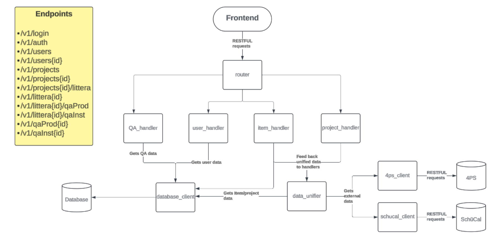

av Alice Johansson
Oktober 7, 2024
De senaste dagarna har det fortsatt mycket fåtts gjort både på backend- och frontendsidan. På frontendsidan har det till och med gått så snabbt att nästan alla undersidor till webbappen har fått sin struktur färdigställd. Då detta diskuterades vid ett möte för hela gruppen 1/10 så beslutades det att en medlem från frontend skulle flyttas över till backend för att balansera arbetsbördan och se till att alla gruppmedlemmar fortsatt skulle ha något att göra utan att blockeras av att vänta på att funktionalitet blev klar. Alice flyttades därför över till backendteamet där hon började arbeta på länken mellan APIets endpoints och applikationens interna databas.
Gruppen fick under de senaste dagarna tillgång till APIerna för Öjebyns Glas och Aluminiums program som Brightsight ämnar hämta information från. Jenny och Elvira på backendteamet har påbörjat arbetet med att hämta information från dessa. Helge och Mattias har fortsatt arbeta på den interna databasen och Helge har även hunnit börja på den backendinfrastruktur som krävs för att användare ska kunna logga in på webbappen.
Backend-teamet skapade även gemensamt ett UML-aktigt diagram som visar kodstrukturen för backenden samt listar diverse endpoints och som kan hållas kontinuerligt uppdaterat allteftersom designen utvecklas.
Diagrammet i fråga. Användningen av detta kommer göra det lättare för gruppen att få en överblick av designen och det kan även visas för projektets intressenter.
Frontend har under de senaste dagarna skapat funktionalitet för att kunna byta språk i appen, något som som tur är insågs vara en nödvändig funktionalitet innan det hade krävts alltför mycket arbetstid för att implementera det. De har även börjat jobba på att implementera en QR-kodsskannare som kommer kunna användas för att direkt få fram informationen om det littera en QR-kod hör till.
Kommande tid så kommer fokuset ligga på att fortsätta utveckla alla delar av backenden för att få information från existerande system, kombinera informationen, spara och tillföra ny data och sedan koppla ihop backenden med frontenden så att allt kan visualiseras. Frontendteamet kommer med tiden också kunna alltmer färdigställa designen för alla undersidor i applikationen. Projektet håller sig fortsatt framför tidsplanen med god marginal.